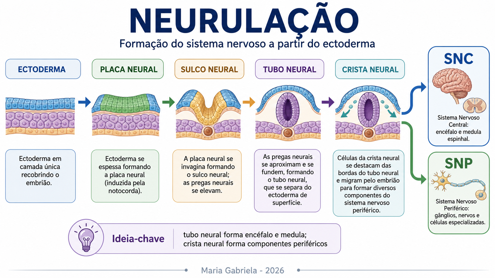

Quiz acadêmico
Revisão geral ou por módulo, com alternativas embaralhadas e feedback.
Abrir quizMapas mentais, explicações guiadas, conexões clínicas e revisão ativa em uma navegação simples para estudar sem se perder.

Cada tema tem conteúdo acadêmico em três caminhos: Entenda, Visualize e Revise.
Pesquise ou toque em um mapa para ampliar. Use o mapa junto com a explicação do módulo.
O quiz e os jogos ficam em páginas próprias para manter a experiência leve e focada.
Revisão geral ou por módulo, com alternativas embaralhadas e feedback.
Abrir quizLigue conceitos, complete ideias e treine verdadeiro/falso com partidas sorteadas.
Abrir jogosUse este projeto como material autoral de apoio, sempre junto a livros, atlas e revisão crítica.
Machado; Martin; Snell; Nolte.
Kandel; Purves; Bear, Connors e Paradiso.
Use semiologia e casos para transformar anatomia em raciocínio aplicado.
Ao citar, atribua autoria a Maria Gabriela Pereira Leite e ao projeto Neuro sem Neura.
Neuro sem Neura é um projeto educacional autoral desenvolvido por Maria Gabriela para organizar o estudo de Neuroanatomia de forma visual, didática e aplicada.
Textos, organização pedagógica, seleção de temas, estrutura didática, identidade do projeto e integração dos materiais são de autoria de Maria Gabriela. A citação é permitida mediante atribuição adequada.
Alguns recursos visuais foram desenvolvidos com apoio de ferramentas de inteligência artificial e posteriormente revisados, adaptados e integrados ao projeto para fins educacionais.